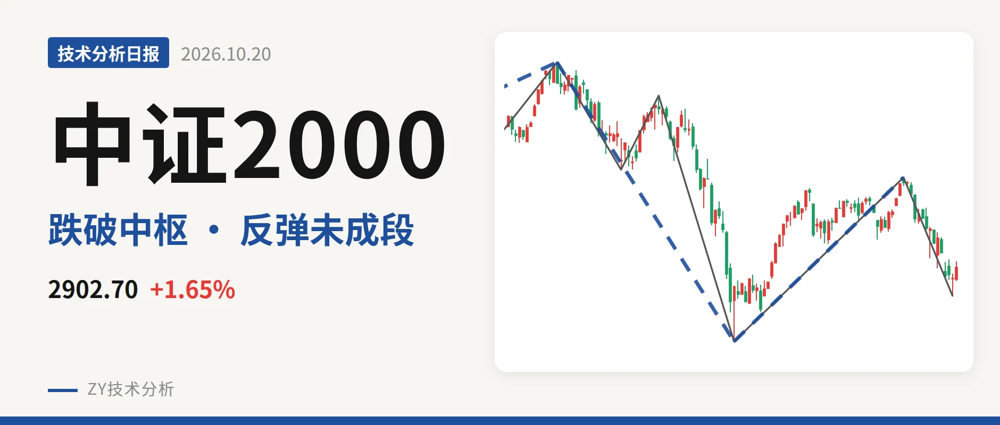
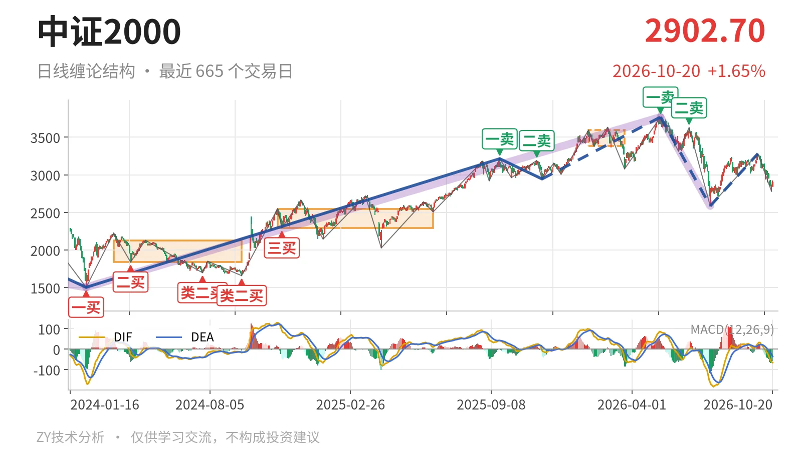
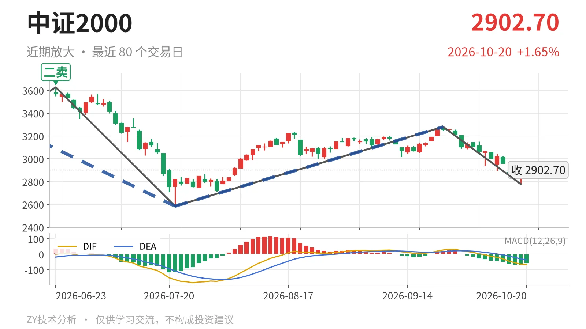

中证2000｜反弹未成线段，3381点下方仍偏弱

最近日线中枢 3381.36—3593.19点，收盘位于中枢之下
一句话：10月20日反弹未成笔，日线结构仍弱于3381点中枢下沿。
🧭 走势结构：5月14日以来下跌段还在延续
5月14日3768.08点开始的日线下跌线段没有结束。更大级别走势同样显示，5月14日以来的下跌段还在延续；7月21日至9月22日的反弹只是从2585.35点回到3280.29点的一笔，还达不到反向线段标准。9月22日之后又转为下跌笔，10月20日虽从2841.98点拉回2902.70点，但仅有一根K线，尚未成笔。因此当前不是日线上涨，而是下跌线段中的次级反弹，结构上未改变由3768点以来的下跌性质。

📦 中枢与位置：跌破最近中枢，反抽未回中枢内部
最新收盘2902.70点位于1月26日至3月23日笔中枢3381.36—3593.19点下方，低于下沿约14.2%。该中枢是最近的日线笔中枢，尚未完成；从历史中轴1984.25点、2420.51点到3487.28点，中枢整体上移，但当前价格已经跌到这个上移中枢之下，说明5月后的回落不是中枢内部震荡，而是离开中枢后的下跌。10月20日最高2924.42点也未靠近3381点下沿，反抽力度有限。
🎯 买卖点：一卖二卖逐级压低，线段类二买待定
日线笔级别上，5月14日一卖3768.08点、6月23日二卖3626.48点，位置一个比一个低，之后反弹高点3280.29点没有重新越过这两个卖点，卖点仍约束当前反弹。线段级别上，7月21日类二买2585.35点处于5月14日以来下跌线段中，该线段还在延续，因此这个类二买是暂定的，会随下跌段延伸而变化。2025年11月21日二三买2944.56点已经被跌破，当前收盘在其下方约42点，说明上一段上涨结构被明显回吐。

⚖️ 背驰：回落未创新低，绿柱与DIF同步抬升
同向比较9月22日至10月19日下跌笔与6月23日至7月21日下跌笔：低点由2585点抬到2778.80点，绿柱面积由810缩到415，DIF低点由-164.2升到-63.7。这是不创新低且力度减弱，不是“新低不新弱”，说明6月23日以来的下跌动能没有在9月后继续放大。但10月20日的反弹尚未成笔，MACD面积还没有形成，只能视为次级别修复；DIF为-66.1，仍在零轴之下，日线调整没有结束。
🔍 关键位置观察：3280点与3381点定反弹成色
上方先看9月22日反弹高点3280.29点附近，若连这里都站不上，则当前仅是下跌段中的弱回抽；重新站上3280点后，才谈得上对3381—3593点中枢下沿的回试。下方看10月19日低点2778.80点附近，再破则要下试7月21日低点2585点附近。若反抽不能回到3381点上方，下跌结构仍延续；若站稳3381点，才可能转为中枢扩展。整体判断偏弱，弱在价格位于最近中枢下方、反弹未成线段、一卖二卖逐次压低。
⚠️ 本文为基于公开行情数据的缠论技术结构记录，由程序自动计算并生成，仅供学习交流，不构成任何投资建议。市场有风险，投资需谨慎。